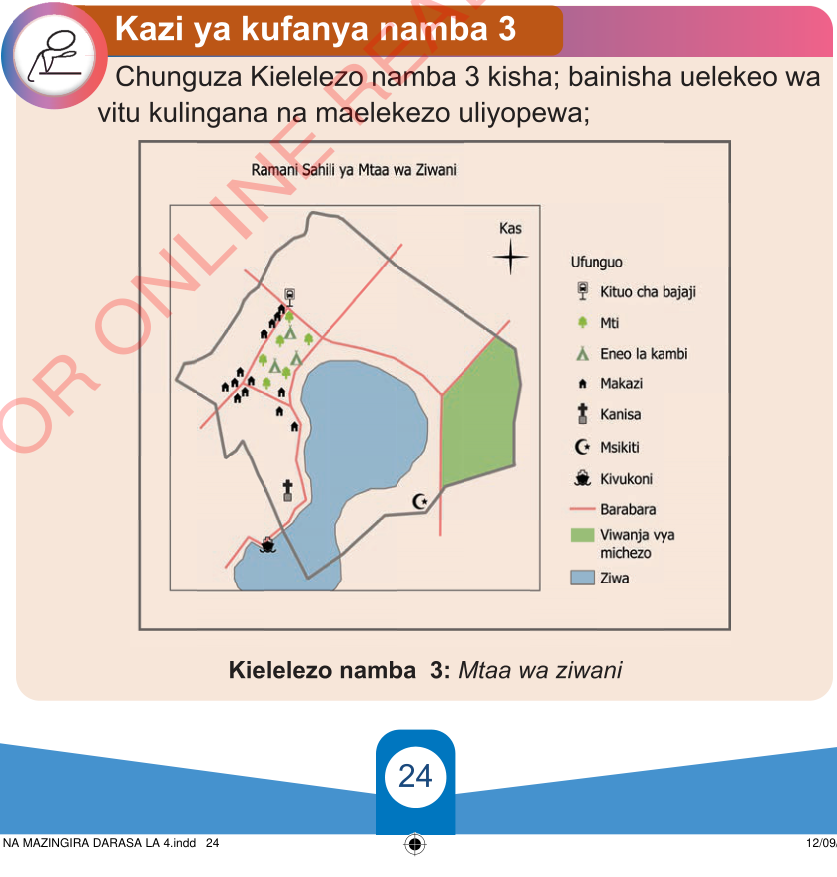

Kubaini Pande Kuu za Dunia kwa kutumia ramani
Ramani ni mwongozo mmojawapo unaotumika kubaini Pande Kuu za Dunia. Miongoni mwa vipengele muhimu vya ramani ni alama ya uelekeo wa Kaskazini. Matumizi ya alama hii katika ramani ni kurahisisha kubaini Pande Kuu za Dunia yaani: Kaskazini, Kusini, Mashariki na Magharibi.
Kazi ya kufanya namba 3
Chunguza Kielelezo namba 3 kisha; bainisha uelekeo wa vitu kulingana na maelekezo uliyopewa;

Kielelezo namba 3: Mtaa wa ziwani
JIOGRAFIA NA MAZINGIRA DARASA LA 4.indd 24
12/09/2025 16:32